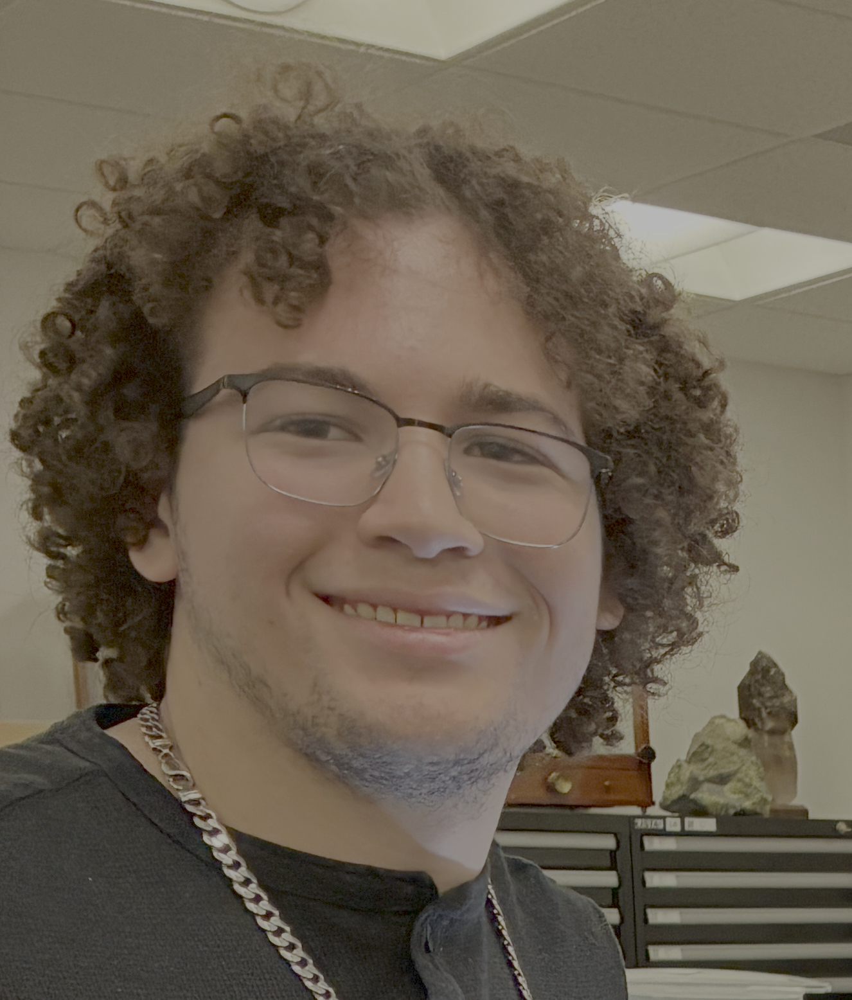

ZeoWaste
Our technology demonstrates an innovative approach to waste management that will commercialize underutilized silica resources in geothermal direct lithium extraction. This is particularly relevant for Imperial Valley, California, with broader applications to other commercial geothermal sites. We aim to produce zeolites from geothermal waste and study their feasibility as a soil amendment for efficient agricultural water and fertilizer use, for example. Our basic research determined a high tolerance to possible impurities that could be present in underutilized silica resources.
Funded by the CSU STEM-NET Early-Concept Grants for Exploratory Research (EAGER) program 2024-2025.
Team

Mateo Zamora is the chemistry laboratory co-lead for zeolite synthesis.
Collaborators
Dr. Aaron Celestian, Los Angeles Museum of Natural History